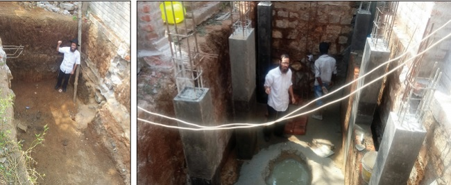

The Tragedy Didn’t Break US – On the Contrary!
A few weeks ago, a very special and most unusual event took place in the remote Indian village of Hampi. Numerous shluchim and tourists attended a most impressive and moving ceremony to dedicate an elegant new mikveh, recently completed after two and a half years of tireless work and determination. Rabbi Mordechai (Motti) Grumach and his wife, Libby, the Rebbe MH”M’s shluchim in Hampi, spared no effort. They endured many difficulties and pitfalls until they were privileged to complete this blessed and extraordinary building project.
 “Traveling to the closest mikveh takes fifteen hours,” said Rabbi Grumach, as he told us about the many problems they faced along the way. “There were countless struggles and cases of Divine Providence that we experienced during the building process. It began with finding an appropriate location, excavating until they hit an impenetrable rock, the need for running water – a rare commodity in this village, antiquated tools, lazy workers, and eventually the cutting off of the village’s electricity…” Yet, despite all these difficulties, the shluchim would not concede on even one halachic stringency. “The mikveh was built with products purchased from all over the world. The Rebbe’s brachos are what helped us to overcome all the obstacles.” In a special discussion we recently had with Rabbi and Mrs. Grumach, we heard for the first time about the terrible blow that came upon their family two and a half years ago and the great hardships they endured during the mikveh building process. The tearful story of the young shluchim clearly represents a modern example of the victory of Jewish Chassidic light over the darkness of the world, the victory of faith over challenges and obstacles. HAMPI – A PRIMITIVE VILLAGE, EVEN BY INDIAN STANDARDS ‘Hampi’ is one of the most popular tourist spots in India. There are those who argue that this remote village is one of the most beautiful places of the world. It is situated in northern Karnataka, a state in the southwestern region of the Indian subcontinent. Spread throughout Hampi are the cellars of ancient palaces, remnants of entire buildings, streets, fortresses, and royal pavilions. The region is surrounded by beautiful rocks, placed upon one another in indescribably complex formations. “While one might think that only men could have had a hand in their design, it’s hard to imagine how anyone could move such huge rocks and place them on top of each other,” notes Rabbi Grumach. The spectacularly colorful views appear alongside rivers, fields, trees, jungle foliage, and the rock formations. The village is divided in two parts with a river flowing in between. The river serves the local residents primarily for bathing, laundering clothes, and even as a source of transportation for small boats bringing people from one shore to the other. “Despite all this, Hampi is a very primitive village, even by Indian standards,” Rabbi Grumach explains. “Ninety percent of the dwellings have no running water, and these ‘houses’ are actually tin shacks. People bathe and do their laundry in the river. The village is virtually light years from civilization. Various forms of progress and advancement are barred by the central authorities over concern that the village will lose its authenticity. “Recently, when I struck a dried tree branch in the Chabad House courtyard, a snake fell on me and then quickly disappeared into the brush. Just think for a moment what was demanded of us when we came to build a mikveh of the highest standards in this village.” The Grumachs arrived at their designated place of shlichus in Kislev 5769. R’ Motti knew India from the time he visited there on Merkaz Shlichus after his k’vutza year, and returning was the condition he set for any possible shidduch. “After the terrible tragedy of the Holtzbergs in Mumbai, I became even more firm in my resolve that Chabad programs in India must grow and develop. Many of our friends suggested that we look for other places on shlichus, however, we were determined to strengthen outreach activities on the Indian subcontinent. When we heard that thousands of tourists came to Hampi each season, we decided to establish our abode there.” When Rabbi Grumach recalled those early days, he smiled. “We knew nothing about this village. All the information we obtained came from tourists we had met and from what appeared on the Internet. While it was clear to us that we were talking about a remote little place, we only really understood once we got there. In Poona – twelve hours away – we arranged all the required purchases of appliances and other items that would assist us in our shlichus, and then made our way to the village. Since then, it’s all history. While there have been many difficulties, we learned to deal with them. “Today, we host hundreds of tourists each Shabbos, and the Chabad House is an address for all things Jewish.” A DIFFICULT TRIAL When I asked Rabbi Grumach about the terrible tragedy that befell his family two and a half years ago, he was quiet for a very long moment. It was clear that the memories still weighed very heavily upon him. “I usually don’t talk about this. The recollections from those days still consume my emotions, and it’s very hard for me. I can say one thing for certain – when I periodically look at the mikveh, I clearly know that the strengths to stand up against the difficulties came in my daughter’s merit. “With regard to your question, it all began on the Shabbos after Purim. Our daughter Devorah Leah Geula woke up with symptoms of fever. We weren’t particularly worried, as things like this often happen to young children. We gave her syrups to soothe the pain and aspirin to lower her fever, and we were certain that it would have a healing effect. “However, these remedies helped only for a few hours, and the fever soon returned with an even higher temperature. When we saw that things were not getting any better, we resorted to some ‘folk medicine’ in the hope that this might do the trick, as it had in the past. Regrettably, it did no good. On Sunday morning, the child was burning with fever. Since the village’s private health clinics were closed that day, we sought the advice of pediatricians in Eretz Yisroel via WhatsApp. We took pictures of her mouth, and the doctors were unanimous in their opinion that the fever was due to ‘foot-and-mouth disease.’ “The truth was that we were very distressed, especially since our daughter was then starting to grow new teeth. We came to the conclusion that the teething and the ‘foot-and-mouth disease’ could easily explain the high fever. However, when the fever remained high the following day, Monday, we realized that we had to get her to a doctor. The temperature outside was brutally hot – 113 degrees Fahrenheit – and we knew that together with her high fever, the child could easily dehydrate. The doctor at the private clinic examined her and made the appropriate diagnosis. Since she displayed all the signs of dehydration, he immediately hooked her up to an intravenous infusion. “While this clinic is one of the most highly advanced in the region, it was still very limited in scope. No air conditioner, electricity outages, and a plague of annoying mosquitoes which we tried to combat by using mosquito netting. The doctor had learned medicine in the West, and he appeared to know what he was doing. When the doctor conducted another examination, he saw how lethargic she was, and all the results indicated a deterioration of her condition. He immediately decided to send us to a large hospital located in the nearby city of Hubli. “By this time, we were no longer composed. We realized that this wasn’t a case of passing seasonal flu. We spoke with the shliach in Bombay, Rabbi Yisroel Kozlovsky, and he arranged a meeting for us with an expert pediatrician in his city. The plan was that after he saw our daughter, my wife would board an El Al flight for Eretz Yisroel, scheduled to depart that Thursday. In the meantime, it was the end of the tourist season and the flow of visitors was considerably smaller. I would remain on my own to make the Pesach seders, and immediately after Yom tov I would return to Eretz Yisroel. To make our flight, we would have to reach the city of Hubli, and from there, we would take a plane to Bombay. We arrived late at the Hubli airport due to police barricades placed on all the roads because of preparations for the upcoming elections in India. By the time we got there, the authorities would not let us enter the terminal. With longing eyes, we saw our flight taking off. This was a moment of devastation. We literally cried, but there wasn’t much that we could do. “We left the airport and headed for the hospital recommended to us by the doctor at the private health clinic near Hampi. The doctor on call made a series of comprehensive tests. From the very outset, it was clear that our daughter was suffering from an inadequate level of oxygen in her blood and she was hooked up to an oxygen tank. “Our older daughter, Chaya Mushka, stayed this entire time in Hampi with two yeshiva students working for us on shlichus. Since we felt that the child was in good hands, we decided that I should return to the Chabad House. In the meantime, my wife remained at the hospital with our little girl. “At a certain stage, there was another serious decline in her condition and my wife told me to hurry back to Hubli. During the intervening time, our daughter was transported by private ambulance to a larger university hospital, where a team of physicians fought to save her life. At this point, we put out a call for people to pray for her recovery. However, by the time I reached the hospital, I realized that the doctors had given up hope. Leading medical experts from Eretz Yisroel, including Professors Sorkin and Berkowitz, with whom we had made contact with the help of Rabbi Eli Wolff from Ohr Avner, gave us constant advice and support while speaking with the hospital staff during those difficult hours – but it appears that her fate had already been determined.” Rabbi Grumach’s voice choked with emotion as he described those difficult and somber moments as they desperately waited for a miracle. “While our anguish ran very deep, it was still quite moving to see how all of Chabad came to our assistance. We received telephone calls from the shluchim in Thailand and Hong Kong. Rabbi Yisroel Kozlovsky from Bombay, Rabbi Eliran Russo, Rabbi Betzalel Kupchik from Poona, my brother-in-law Rabbi Akiva Sudri – each one helped in his own way. We felt that all of us were serving the same master.” The pain must have been so intense. How did you manage to uplift yourselves from such a tragedy to return to the place of your shlichus and continue with even greater fortitude? “Despite everything, we never thought for a moment about leaving our shlichus. Naturally, one might think naively that if the doctor at the private clinic had diagnosed the problem right away, she then would have received the appropriate treatment and survived her illness. This is a trick of the yetzer ha’ra. We know that a Gentile has no free choice, and it was the Divine Hand of Alm-ghty G-d that implemented this terrible decree. “It’s quite clear to us that the forces of spiritual evil make tremendous efforts to impair the spreading of the wellsprings of Chassidus in India. There’s a great movement here toward the path of Torah, while the side opposing holiness takes every possible step to ch”v prevent the realization of the Rebbe’s objective and mission. We operate with the strength of the Rebbe.” INCREASING IN PURITY AGAINST ALL ODDS During the period of the Shiva, the Grumachs had already resolved to increase in spreading the light of Torah. The decision was made to build a mikveh in remote Hampi. “Practically speaking, the mikveh construction had begun more than five years earlier. The closest mikveh to Hampi was a fifteen-hour journey away. Torah observant tourists would settle for immersing themselves in the river, but this posed many halachic problems and constituted a kosher immersion only by the most lenient standards. At first, we thought that we would just make a regular mikveh. However, after the passing of our daughter, we decided to build the most beautiful mikveh possible in her memory. “That Friday, we arrived in Eretz Yisroel for the funeral procession. Months later, as the month of Elul began and the High Holiday season approached, I flew to India earlier than usual to get the mikveh project rolling. Before the flight, I sat with Rabbi Boaz Lerner, and he exposed me to the various halachos pertaining to mikvaos. I began to have a greater understanding of the complexity of the project, especially in a village as remote as ours, yet I remained determined.” Can you share with our readers about what it means to build a mikveh in India? “In an organized country, once you manage to collect all the money for the construction of a mikva, you then have to bring an engineer, a contractor, submit the building plans, and regularly check to see that the work is being done to your satisfaction. Not so in India. There, I was the contractor, I was the engineer, and I was the architect. “The difficulties began from the very start of the project. Every time the diggers started work, they came across a solid and impermeable rock. As a result, we moved from place to place until we managed to dig a relatively deep pit. However, this still wasn’t enough and it was decided to build part of the pit outside. To try and hew the rock, we ordered a special tractor with a jackhammer that managed to split the rock only slightly. By the way, in order for the tractor to get to us, we had to obtain permission to cut off the electricity from the entire village…” Sounds really exhausting… “This was just the beginning. The main difficulty was the language barrier. I say one thing, but the workers understand something else – or they want to understand something else. For example, when we reached the floor installation stage, there’s a halachic stringency that the bottom of the ceramic tiles should not have a receptacle. Since most ceramic tiles have a receptacle in order to stick firmly to the surface, we searched throughout southern India until we found what we wanted. “When the tiler was called in to do the job, he asked why we had delayed so long with the floor installation, and I explained to him. He prepared the building materials and in the meantime, I had to go to the Chabad House. Due to some other matter that I had to arrange for the mikveh, I arrived back at the site and saw that the tiler had affixed the ceramics face down. For some reason, he had understood that this was what I had wanted him to do… Thanks to G-d’s Divine Kindnesses, I got there before the glue dried, leaving time to remove the tiles and stick them back on the right way. “At a certain point, after the pit had been built, we had to check and see that there was no leakage. We closed the pit with thick plastic and filled it with water, and I then inserted a nail at a certain height and measured each day how much water was trickling in. I came on the first day and detected no seepage. When I returned the second day and saw the same results, I was very pleased. However, on the third day, I was stunned to find more than three centimeters of water in the pit. I was bitterly disappointed. “By Divine Providence, I suddenly noticed the workers taking jugs of water from the mikveh to wash their hands. It turned out that despite having warned them not to do so, they started using the mikveh waters, and this was the reason for the seepage. I was relieved by my discovery and my good fortune in seeing this myself, otherwise, we would have had to work hard to reseal the pit – all for nothing. “In fact, the biggest problem with the mikveh construction was the need for running water. Ninety percent of the houses in Hampi have no bathroom or indoor plumbing. Local residents use the river as their main water source. They also get their drinking water during an hour each morning, filling up their bottles themselves. A mikveh needs running water. What was the solution? Digging a well. How did I know where to dig? We brought in a special excavation truck. India has a very primitive, albeit successful, approach on determining where water is located and at what depth. A local Indian, expert in finding underground water sources, walks with a coconut in his hand. When he stops with the coconut, we know that there’s a source of waters underneath. “This wasn’t so simple, and I asked rabbanim if this was a case of avoda zara. The truth is that we were dealing with someone who had a blood type with a high level of sensitivity to water. “After this Indian found us a likely spot, the truck started drilling, and a few hours later, we found water. We were very happy. Later, we learned that many local villagers had been dreaming about a well in their courtyard. However, in most instances, even when they found water, it was a very sparse amount. “Now, all that remained was to set up the electrical power. The truth was that we really couldn’t rely on the Indian electricians. Anytime an Israeli came into the Chabad House, he was immediately asked if he knew something about electricity. However, we always got a negative reply. Then, just as we were about to throw in the towel, an Israeli named Oria Ehrlich arrived at the Chabad House. He was on a two-week vacation in India, including one week in Hampi. When he heard that we were looking for an electrician, he happily came to our assistance. It turned out that he was in charge of the electrical systems at several Israeli hospitals, and he volunteered to handle the electricity at the mikveh. Over a period of three days, he drilled through walls, connected and fed the wiring, until everything was ready to go. “The greatest case of Divine Providence we had ever experienced was when we needed running water. Hampi doesn’t get rain during the winter – only during the summer months. Yet, when the summer arrived, there still hadn’t been a drop of rain. The farmers were already quite despairing and the whole country was talking about the drought. Yet, on the day the mikveh was ready, rain began to fall in a storm that would last for three days. The Indian who worked with us at the Chabad House and had seen this miracle himself told all his friends, ‘You know why it started raining? In the merit of the mikveh…’ “The work continued and continued until, to our great joy, it was finally completed. Many people have already been privileged to immerse themselves in the mikveh, all with a great feeling of appreciation. Outside, the neighbors’ homes look as if they’re about to cave in, no paved roads and no running water, fruits lying everywhere in the mud and dirt, while inside, there’s a beautifully designed, modern, kosher mikveh.” AN INTERNATIONAL MIKVEH Last month, you celebrated the dedication of the mikveh. What are your feelings during these days after the completion of this building project? “It’s a kind of fulfillment. We’ve been waiting for this moment for a very long time. The investment was tremendous, yet we didn’t relent. My wife remained steadfast as she made certain that the entire interior design was not lacking in beauty and grandeur. We laugh and say that this is an international mikveh: The flowers came from Sri Lanka, the ornamentation came from the United States, the lighting was from Bombay, while other components came from Eretz Yisroel. It was very important to us to do the unbelievable and build a high-quality mikveh. “Moreover, I feel a sense of continuity. While our daughter Devorah Leah Geula is no longer with us, her spirit remains. She was our strength and our motivation, and in her merit, we succeeded in completing our mission.” How do you, in distant Hampi, manage with all these difficulties, and yet see the light of the Redemption? “The very fact that we have an elegant and decorative mikveh, under constant and intensive usage, is already Redemption. For the growing number of families who are using this mikveh, this is Redemption!” THE GENEROUS AMONG OUR PEOPLE As mentioned earlier, a moving event was held last month for the dedication of the new Hampi mikveh. Honored participants at this event included several of the shluchim throughout India, among them Rabbi Betzalel Kupchik from Poona and Rabbi Akiva Sudri from New Delhi. During the ceremony, the shluchim gave over divrei Torah, put up the mezuzos, while those in attendance visited the mikveh, accompanied by a detailed explanation of the importance of family purity. At the end of the interview, Rabbi Grumach asked if he could give his thanks to several generous people in whose merit the mikveh was built. First and foremost, there is Rabbi Meir Gutnick from Crown Heights, who contributed substantially towards this project. In recognition of his support, the mikveh was named in part after his mother, Devorah bas Avraham. Another donor who took a significant role in this project is Rabbi Moshe Mortner from Mexico. An additional measure of thanks and appreciation also goes to the mikveh’s architect and primary motivating force in both material and spiritual terms, Rabbi Boaz Lerner, who passed away during the construction process. Similarly, thanks go to those T’mimim who were active partners in the mikveh project: Menachem Cohen, Avichai Sa’id, and Mendy Grumach. “Chassidim and many friends also gave via the ‘Charidy’ fundraiser we ran, and we owe them our deepest appreciation as well,” said Rabbi Grumach in conclusion. “This naturally includes the shluchim Rabbi Betzalel Kupchik from Poona, Rabbi Akiva Sudri from New Delhi, and Rabbi Boaz Jurkowicz, who accompanied us every step of the way. Many of the tourists and backpackers who passed our way also gave contributions, and this is one of the unique aspects to our mikveh.” ‘770 RESTAURANT’ “I would like to tell you something interesting. The person who cut the ribbon at the mikveh dedication ceremony was a local Gentile named Sino. During the first year after our arrival, he would come to the Chabad House each day, sometimes several times a day, since he worked as an errand boy at the local grocery store. The first few times he would come, he would peek inside and head off to work. However, as time passed, he would bring us the groceries and stay to watch our work with the tourists. I naively thought that he was just another tactless local, and I didn’t really pay much attention to him, even when he started asking questions. “Eventually, he started fixing anything that needed to be fixed in the Chabad House, even without asking. At a certain stage, I became suspicious that he was doing this to get some form of payment. Yet, the fact was that he made his repairs and went on his way. When we offered to pay him, he gently but firmly refused. He took great interest in our activities, all done on a volunteer basis. He soon became the Chabad House all-purpose ‘jack-of-all-trades’… “If an Israeli was a patient in an Indian hospital, he would travel there to make certain that they were giving him proper treatment. If a Jew was a victim of theft, he ran to help him. When we wanted to buy a large Chanukah menorah, I drew him a model. He then immediately went to the nearest town and came back with exactly what we wanted. During the last two years, he has been a tremendous help in our mikveh construction project. He was our interpreter and was involved in acquiring the necessary raw materials and finding the best workmen and tools. “Three years ago, Sino was privileged to experience personally an amazing miracle from the Rebbe. One day, he came to the Chabad House with a very sad expression. When we asked what was wrong, he said that his newborn son had just died due to complications arising from his birth. He asked if he too could write to ‘Moshiach Baba’ just as the Jews do, and I replied that he could. The answer he received was directed to a gabbai, and among other things the Rebbe blessed his wife with an easy and normal birth. I told him that the Rebbe had blessed him to have a son, and lo and behold, this is exactly what happened. Ten months later, his wife gave birth to a healthy baby boy. Any time Sino meets an Israeli tourist, he tells him about his son who was born in the merit of the Rebbe’s bracha. “Sino doesn’t do anything without writing to the Rebbe. He recently decided to open a restaurant, but not before receiving the Rebbe’s bracha. By the way, the restaurant’s name is ‘770 Restaurant’…”
Beis Moshiach (staff). "The Tragedy Didn’t Break US – On the Contrary!." Beis Moshiach, no. 1057 (February 15, 2017).